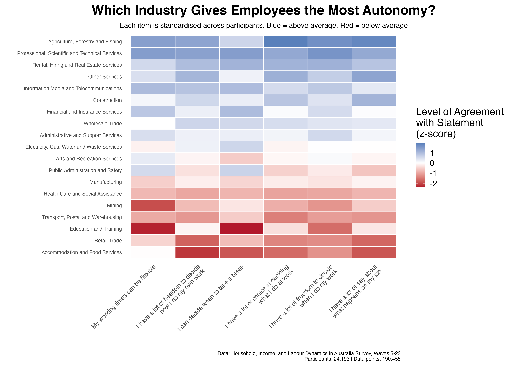

There's solid evidence that increasing employee autonomy leads to better job satisfaction, engagement, and staff retention. But not all industries are equal when it comes to level of autonomy offered.
So, which industry is best for workers wanting to maximise their autonomy?
Our analysis looked at 24,193 Australian workers tracked over nearly two decades (2005–2023) as part of the HILDA survey. We examined six different dimensions of employee autonomy across 19 industries.
Top 5 Industries for Autonomy:
- Agriculture, Forestry and Fishing
- Professional, Scientific and Technical Services
- Rental, Hiring and Real Estate Services
- Other Services
- Information Media and Telecommunications
Bottom 5 Industries for Autonomy:
- Accommodation and Food Services
- Retail Trade
- Education and Training
- Transport, Postal and Warehousing
- Mining

Of course, some industries are naturally more constrained. In heavy industry, for example, many procedures need to be standardised for health and safety reasons. Nevertheless, these results seem like a useful guide for anyone who places a high value on autonomy in finding an industry where they can thrive.